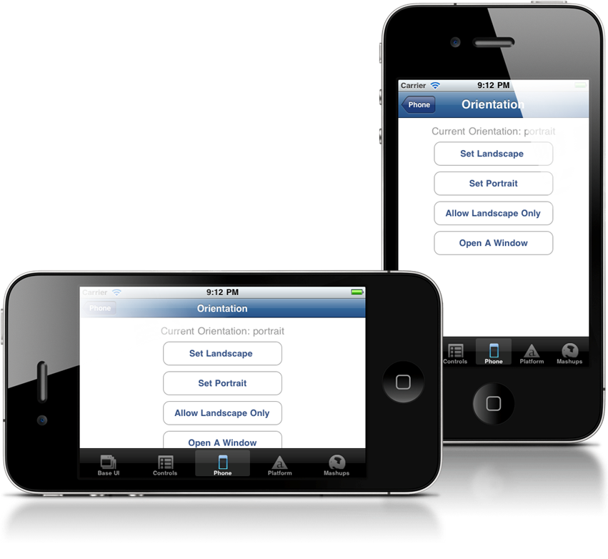
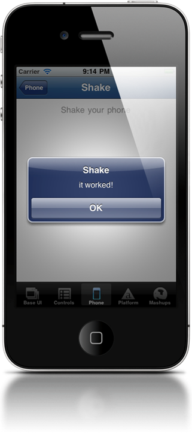
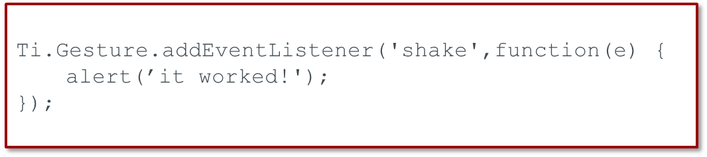
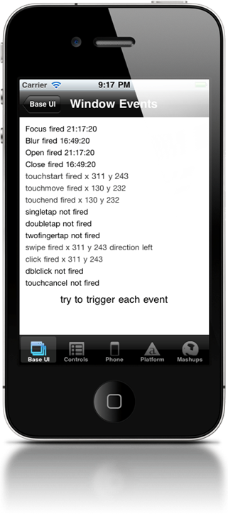

Orientation and Gestures
Advanced Titanium Mobile Development
Agenda
- Device orientation
- Gestures
 Topic
Topic
Orientation
Orientation Support

- Fixing orientation for the whole app
- Setting supported orientation for each window
- Reacting to orientation changes dynamically
App-level Orientation
- App-level settings either fix orientation for the entire app
- Or specify the possible orientations that the app supports
- Controls splash screen orientation (on tablets)
- Techniques differ for iOS & Android
App-level Orientation Support - iOS
In tiapp.xml:
<ios>
<plist>
<dict>
<key>UISupportedInterfaceOrientations</key>
<array>
<string>UIInterfaceOrientationPortrait</string>
</array>
<key>UISupportedInterfaceOrientations~ipad</key>
<array>
<string>UIInterfaceOrientationPortrait</string>
<string>UIInterfaceOrientationPortraitUpsideDown</string>
<string>UIInterfaceOrientationLandscapeLeft</string>
<string>UIInterfaceOrientationLandscapeRight</string>
</array>
</dict>
</plist>
</ios>
App-level Orientation Support - Android
Option 1 - modify tiapp.xml:
- Copy code from build/android/AndroidManifest.xml
- Add nested <manifest> tags within <android>
- remove '|orientation' from every node
<android xmlns:android="http://schemas.android.com/apk/res/android">
<manifest>
<activity
android:name="org.appcelerator.titanium.TiActivity"
android:configChanges="keyboardHidden"
android:screenOrientation="portrait"
/>
<activity android:name="ti.modules.titanium.ui.TiTabActivity"
android:configChanges="keyboardHidden"
/>
</manifest>
</android>
App-level Orientation Support - Android
Option 2 - Custom Android manifest file
- Copy build/android/AndroidManifest.xml to platform/android/AndroidManifest.xml
- remove '|orientation' from every node
Setting Orientation per Window
Window Orientation Modes
Supported values include:
- PORTRAIT / UPSIDE_PORTRAIT
- LANDSCAPE_LEFT / LANDSCAPE_RIGHT
// traditional API code
var win = Ti.UI.createWindow({
orientationModes: [Ti.UI.PORTRAIT, Ti.UI.LANDSCAPE_LEFT]
});
/* With Alloy, can define in the TSS file */
"#window": {
orientationModes: [Ti.UI.PORTRAIT, Ti.UI.LANDSCAPE_LEFT]
}
Change a Window's Orientation
$.orient.addEventListener('click', function() {
if(Titanium.UI.orientation == Ti.UI.PORTRAIT) {
Titanium.UI.orientation = Ti.UI.LANDSCAPE_LEFT;
} else {
Titanium.UI.orientation = Ti.UI.PORTRAIT;
}
})
$.index.open(); Orientation Events
Ti.Gesture.orientationchange
Event properties and methods:
Ti.Gesture.addEventListener('orientationchange', function(e) {
// current device orientation
// Ti.Gesture.orientation
// or, get orientation from event object
// e.orientation
// also, there are two helpers:
// e.source.isPortrait()
// e.source.isLandscape()
});
Handling Orientation Changes
React to orientation change via event listener
Use self-contained, self-updating UI components
Move, rotate, and swap UI elements
Take advantage of the orientation
Don't forget the soft keyboard
Topic
Gestures
Gestures
Shake
Swipe
Touch start, end, move, and cancel
Pinch (iOS)
Long press
Pitch, roll, and yaw
Shake

Ti.Gesture.shake
Event object properties

Swipes
Built-in event on most Ti.UI elements
Event object properties:
- direction
- source
- x/y coords
Touches
Built-in event on most Ti.UI elements
Subtypes: touchstart, touchmove, touchend, touchcancel
Event object properties:
- source
- x/y coords
touchmove fires continuously during event
Pinch

iOS and Android
Zoom only (no rotation)

Long press
- Supported by most UI elements
- Keep in mind native UI conventions for long presses
- Native support since 1.8, simulate with touchstart/touchend for older SDKs
Gyroscope (via Accelerometer)
iOS and Android natively support gyroscope
Titanium APIs don't support it currently
Not all devices include necessary gyro hardware
Approximation: Use the accelerometer to track pitch, roll, and yaw changes
Q&A
Lab Goals
Update simple app to add orientation support
Update data based on swipe and shake events
wiki.appcelerator.org/display/td/325+-+Handling+Gestures+and+Orientation+Changes